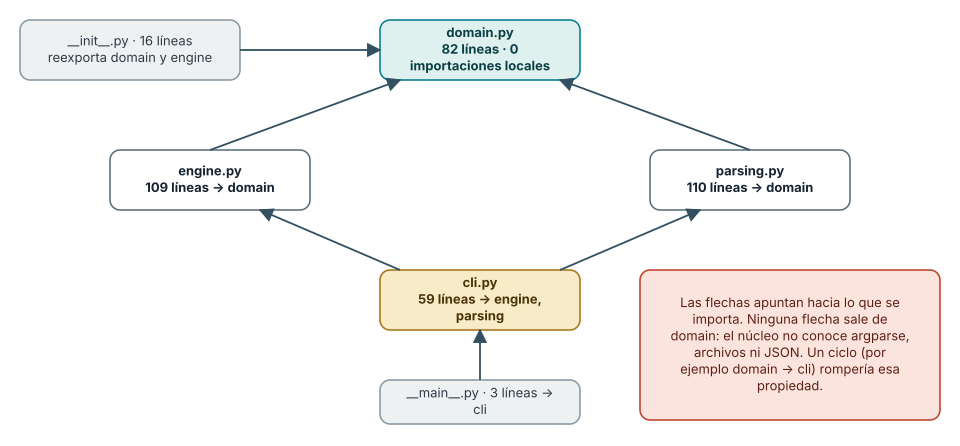
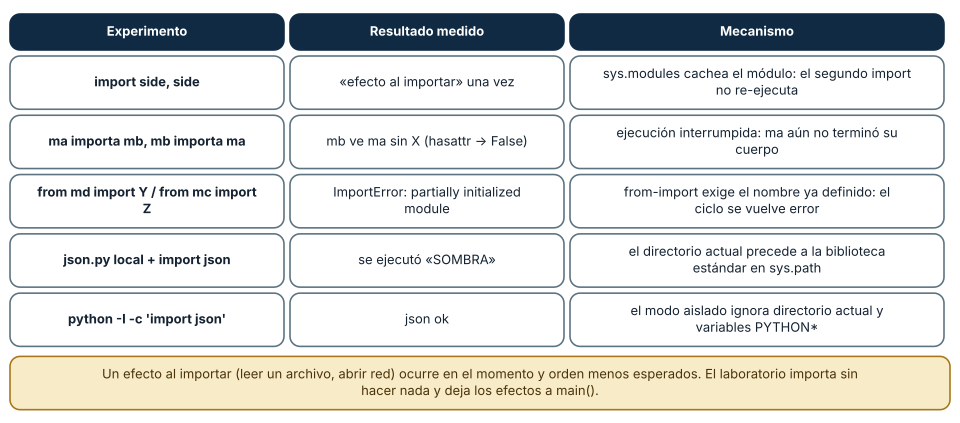
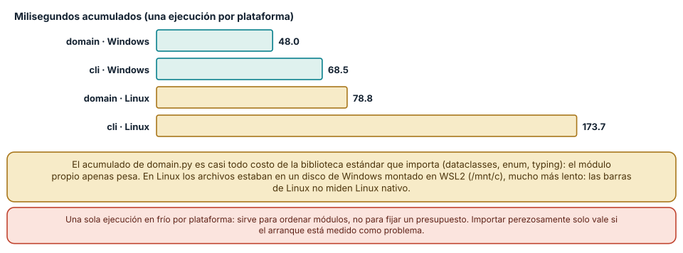

← SE-067 — Entrada, salida y serialización · ↑ Parte 05 · 📚 Índice completo · 🌐 Portal · SE-069 — Pruebas tempranas y diseño por ejemplos →
Punto profesional y fundamento pedagógico
Punto profesional. La clase existe para separar módulos por responsabilidades y contratos estables, no por tamaño de archivo.
Por qué aparece aquí. Se sitúa después de Entrada, salida y serialización y antes de Pruebas tempranas y diseño por ejemplos: convierte el conocimiento anterior en una decisión observable que la clase siguiente podrá reutilizar. La continuidad se comprueba en el artefacto, no por compartir vocabulario.
Error conceptual que debe corregir. Crear módulos que solo redistribuyen dependencias o exponen internals.
Secuencia de aprendizaje. Antes de leer la solución, el estudiante predice el resultado del caso normal y del error conceptual anterior. Luego explica un caso resuelto paso a paso, construye un contraejemplo que cambie la decisión y, sin consultar el texto, reconstruye el mecanismo y lo aplica a una entrada nueva. La secuencia usa predicción, explicación propia, contraste y recuperación. ICAP distingue participación de construcción de conocimiento; How People Learn II exige conectar conocimiento previo, contexto y transferencia; la práctica de recuperación respalda producir de nuevo la explicación tras una demora; y Education for Life and Work exige devolución que explique la causa del error.
Evidencia de aprendizaje. Dependency-map.md con API, consumidores, ciclo roto y prueba contractual. Debe contener predicción previa, observación, explicación causal, contraejemplo, criterio de aceptación y una nota de qué dato haría cambiar la conclusión.
Límite de la conclusión. Modularidad local no garantiza arquitectura mantenible.
Trazabilidad fuente → afirmación
| Fuente primaria u oficial | Afirmación que respalda | Lo que no prueba |
|---|---|---|
| Python Tutorial — Modules | define la semántica y los límites de la API de Python utilizada en el experimento | No demuestra por sí sola que el artefacto del estudiante sea correcto. |
| Python Language Reference | define la semántica y los límites de la API de Python utilizada en el experimento | No demuestra por sí sola que el artefacto del estudiante sea correcto. |
| SWEBOK Guide v4.0a | sitúa la decisión dentro de construcción, diseño, pruebas y práctica profesional de ingeniería de software | No demuestra por sí sola que el artefacto del estudiante sea correcto. |
Antes de empezar
Esta clase construye la CLI diagnóstica, implementación incremental de la especificación del modelo de decisión diagnóstica. Recupera SE-067 y convierte una regla ya modelada en comportamiento ejecutable o comprobable. Trabaja en cambios pequeños: predicción, código, ejecución, evidencia y explicación. Ejecutar sin poder explicar el resultado no completa la práctica.
Prerrequisitos
- Python 3.11 o posterior disponible como
pythonopython3; registra la versión real. - Terminal, editor de texto y Git; no se requieren paquetes externos.
- Comprender el contrato del modelo de decisión diagnóstica: entradas, resultados, errores e invariantes.
Problema auténtico
La CLI diagnóstica funciona en main.py, pero cualquier cambio de formato afecta clasificación y pruebas. Importar el archivo ejecuta la CLI. Se necesita separar dominio, adaptadores y presentación sin crear módulos vacíos ni ciclos.
Objetivos observables
Al terminar podrás explicar el mecanismo del lenguaje, predecir una ejecución, implementar un caso normal y sus fronteras, diagnosticar un fallo controlado, proteger el comportamiento con evidencia y separar lo transferible de lo específico de Python.
Mapa conceptual
Ver la notación fuente del diagrama
flowchart LR
S[Especificación el modelo de decisión diagnóstica] --> V[Valores y contratos]
V --> C[Control y transformación]
C --> E[Efectos en la frontera]
E --> O[Salida observable]
O --> T[Prueba y diagnóstico]
T -->|defecto o caso nuevo| SEl código no reemplaza la especificación: la materializa bajo reglas concretas del lenguaje y del entorno. La pregunta de esta clase es: ¿Qué responsabilidad cambia por una razón distinta y qué contrato permite reemplazarla?
Temas y por qué importan
| Lente | Pregunta | Evidencia |
|---|---|---|
| valor | ¿qué representa y qué tipo tiene? | ejemplo inspeccionable |
| control | ¿qué camino o repetición ocurre? | traza de estados |
| contrato | ¿qué acepta, retorna y rechaza? | casos frontera |
| efecto | ¿qué cambia fuera del cálculo? | archivo o stream controlado |
| mantenimiento | ¿cómo se detecta una regresión? | prueba y diff enfocado |
Conceptos y decisiones
1. Módulo y namespace
Un módulo es código cargable con su namespace. La primera importación ejecuta su nivel superior y se guarda en sys.modules; por eso el nivel superior evita I/O inesperado. if __name__ == '__main__' separa ejecución directa de importación.
2. Interfaz pública
La interfaz es el conjunto de nombres y comportamientos que consumidores usan. Un guion bajo comunica detalle interno por convención, pero no impone privacidad. Se documentan tipos, errores y efectos, no solo firmas.
3. Separación por política y mecanismo
El dominio decide elegibilidad; el adaptador JSON traduce bytes; la CLI coordina. Esta frontera permite probar reglas sin archivos y cambiar formato sin tocar cálculo. Separar cada función en archivo distinto aumenta navegación sin reducir acoplamiento.
4. Dependencias dirigidas
El núcleo no importa la CLI ni detalles de almacenamiento. Adaptadores dependen del contrato del núcleo. Un ciclo de imports suele revelar responsabilidades mezcladas o constantes compartidas en el lugar incorrecto.
5. Inyección y composición
La función principal recibe colaboradores —loader, clock, writer— o valores ya obtenidos. La composición ocurre en una raíz pequeña. No hace falta framework: pasar una función como argumento basta para sustituir I/O en pruebas.
El grafo de dependencias del paquete, leído del código
Una arquitectura que solo existe en un diagrama no se puede verificar; una que se lee del código sí. Se analizaron con ast las importaciones de los seis módulos de diagnostic_cli. domain.py (82 líneas) no importa ningún módulo local; engine.py (109) y parsing.py (110) importan solo domain; cli.py (59) importa engine y parsing; __init__.py (16) reexporta domain y engine; __main__.py (3) importa cli. Las únicas dependencias externas son de la biblioteca estándar: argparse, json, pathlib, dataclasses, enum, sys y typing.
Esa forma tiene una propiedad: las flechas apuntan hacia el núcleo y nunca salen de él. domain.py no sabe que existen archivos, JSON ni terminales; engine.py no abre archivos ni imprime; parsing.py traduce JSON a valores del dominio; cli.py traduce fallos a códigos de salida. Por eso el motor se prueba sin crear archivos y el parser sin ejecutar la CLI. Un ciclo (por ejemplo, que domain importara cli para imprimir un aviso) rompería esa propiedad y haría imposible entender o cambiar un módulo sin los demás.
Separar política y mecanismo es la otra mitad. La política es la regla (elegir la prueba que más elimina por unidad de costo, en select_next); el mecanismo es cómo se lee y escribe. Cuando la política cambia, solo engine.py cambia; cuando cambia el formato de entrada, solo parsing.py. La inyección también es visible: main(argv, stdout, stderr) recibe los flujos como parámetros, y las pruebas pasan io.StringIO en lugar de redirigir la consola.

Cómo leer la figura. Una flecha de A a B significa «A importa B». Se lee de abajo hacia arriba: las capas externas (cli, main) dependen de las internas; el núcleo no depende de nadie. Dónde deja de valer: el grafo se extrajo de import estáticos del paquete; no ve importaciones dinámicas (importlib) ni dependencias de datos. Es una propiedad del código actual: nada impide que alguien añada un ciclo si no hay una prueba o una regla que lo detecte.
El sistema de módulos: caché, ciclos y sombras
Importar un módulo ejecuta su cuerpo una vez y guarda el resultado en sys.modules. Se comprobó con un módulo con una línea print: import side, side imprimió el mensaje una sola vez. Dos consecuencias: un efecto en el nivel del módulo (abrir un archivo, una conexión) ocurre en un momento que depende de quién importe primero, y los módulos se comportan como singletons del proceso.
Los ciclos muestran la mecánica. Con ma que importa mb y mb que importa ma, la ejecución fue: ma start, mb start, mb sees ma.X? False, ma end. Cuando mb se ejecuta, ma existe en sys.modules pero aún no terminó su cuerpo, de modo que X no está definido. Con from md import Y / from mc import Z el resultado es un error: ImportError: cannot import name 'Z' from partially initialized module 'mc' (most likely due to a circular import). La solución no es un truco de orden, sino reorganizar: extraer lo común a un tercer módulo del que ambos dependan, o invertir la dependencia.
Y el nombre de un módulo propio puede ocultar uno estándar. Se creó un json.py en el directorio actual y import json ejecutó el archivo propio (imprimió «SOMBRA»), porque el directorio del script o el directorio actual precede a la biblioteca estándar en sys.path. python -I (modo aislado) importó el json real. Las defensas son nombres que no colisionen con la biblioteca estándar, el modo aislado en scripts de infraestructura y entornos virtuales con dependencias fijadas.

Cómo leer la figura. Cada fila es un experimento real con módulos temporales. Observa que la caché y el ciclo se explican por el mismo mecanismo: el módulo está en sys.modules antes de terminar de ejecutarse. Dónde deja de valer: el orden de búsqueda de sys.path depende de cómo se lanza Python (-m, script o -c); la sombra del directorio actual no ocurre igual con python script.py que con python -m. Validar en tu forma de ejecución.
Interfaz pública y costo de importar
Un módulo promete una interfaz y esconde el resto. diagnostic_cli.__all__ lista nueve nombres (DiagnosticReport, DiagnosticSpec, Observation, Outcome, Probe, Result, State, apply_observation, run_diagnosis); lo demás (parse_spec, iter_json_lines, select_next) es de uso interno aunque Python no lo impide. dir(diagnostic_cli) mostró además los submódulos cli, domain, engine y parsing, porque importar un paquete deja sus submódulos como atributos: __all__ solo controla from paquete import *. La interfaz se sostiene por convención, documentación y pruebas, no por el intérprete; un nombre con guion bajo inicial señala «interno».
El costo de importar es el costo de arrancar. Con python -X importtime, el acumulado de diagnostic_cli.domain fue 48.0 ms y el de diagnostic_cli.cli 68.5 ms en Windows (78.8 y 173.7 ms en Linux). Casi todo ese tiempo es de la biblioteca estándar que se importa (dataclasses, enum, typing, argparse), no del código del paquete: parsing costó 0.7 ms y engine 3.1 ms. La medición de Linux se hizo sobre archivos de Windows montados en WSL2 y no representa Linux nativo.
La conclusión es doble. El código propio es barato; la dependencia es lo que cuesta, y eso sustenta la regla de no importar bibliotecas para lo que la estándar resuelve. Y una interfaz bien acotada permite cambiar el interior sin romper a los consumidores: la clase siguiente (pruebas) protege esa promesa.

Cómo leer la figura. Las barras son milisegundos acumulados de una importación en frío; las verdes son Windows y las doradas Linux (sobre un disco montado, más lento). Dónde deja de valer: una sola ejecución en frío por plataforma: sirve para ordenar módulos, no para fijar presupuestos. La caché de bytecode (__pycache__) y la carga del disco cambian el resultado; el valor «de arranque» depende del equipo.
Definiciones de trabajo
- módulo: unidad de código con namespace propio.
- interfaz: comportamiento público esperado por consumidores.
- adaptador: traducción entre contrato interno y sistema externo.
- dependencia: conocimiento de un componente sobre otro.
- composition root: punto donde se ensamblan colaboradores.
Estas definiciones describen el uso concreto en la CLI diagnóstica. Cuando Python permita varias conductas, el contrato del programa elige una y la hace visible con validación y pruebas.
Ejemplo mínimo
# diagnostic_cli/domain.py
def choose_next(hypotheses, tests, authorized_ids):
eligible = [t for t in tests if t["id"] in authorized_ids]
return min(eligible, key=lambda t: (t["cost"], t["id"]), default=None)
# diagnostic_cli/__main__.py
from .cli import main
raise SystemExit(main())Divide un script en domain.py, json_io.py, cli.py y __main__.py. Dibuja flechas de importación y elimina toda flecha del dominio hacia CLI/I/O.
Ejecuta el fragmento en un archivo, no solo en una conversación interactiva. Conserva comando, versión, salida y explicación de cada línea relevante.
Ejemplo profesional
La CLI diagnóstica expone choose_next como interfaz de dominio, estable y sin efectos. La CLI convierte excepciones de frontera a códigos de salida. Los módulos no imprimen al importarse y el paquete puede ejecutarse con python -m diagnostic_cli.
El criterio profesional es que el comportamiento pueda ser consumido, diagnosticado y cambiado sin depender de conocimiento oral ni de estado oculto.
Práctica guiada
- marca razones de cambio.
- define interfaz del núcleo.
- mueve efectos a adaptadores.
- dibuja grafo de imports.
- prueba que importar no emite salida.
- ejecuta
python -m unittest -vcuando existan pruebas y registra el resultado exacto.
Ejercicios
- Grafo: genera con
astel grafo de importaciones de tu propio proyecto y dibújalo; marca cualquier flecha que apunte hacia afuera del núcleo. - Ciclo: reproduce un ciclo de importación con
importy confrom … import, y explica por qué solo el segundo falla. - Interfaz: lista lo que debería estar en
__all__de tu módulo y escribe una prueba que importe solo esos nombres. - Costo: mide con
-X importtimeel arranque de tu CLI y decide si alguna importación podría diferirse sin esconder un efecto.
Reto verificable
Entrega un cambio que incluya comportamiento, caso normal, caso límite, fallo controlado y explicación. Otra persona debe poder ejecutar los comandos desde un checkout limpio y relacionar cada salida con una regla del modelo de decisión diagnóstica.
Demostración guiada
- Escribe la entrada y la salida esperada antes del código.
- Ejecuta el caso mínimo y observa valores intermedios sin dejar prints permanentes en el núcleo.
- Añade el caso frontera que obligue a decidir, no solo a teclear.
- Introduce el fallo descrito abajo y confirma que la evidencia lo detecta.
- Corrige, ejecuta toda la suite y revisa el diff por efectos no deseados.
Preguntas frecuentes
¿Cuándo dividir un archivo en módulos?
Cuando una parte cambia por razones distintas al resto (formato de entrada, regla de negocio, salida). Contar líneas no sirve: el laboratorio tiene módulos de 82 a 110 líneas porque cada uno cambia por una sola razón.
¿__all__ impide usar nombres internos?
No; define qué exporta import * y documenta la interfaz. Lo interno se marca con guion bajo y se protege con pruebas de la interfaz pública.
¿Importar dentro de una función es mala práctica?
Es una herramienta para ciclos o dependencias opcionales, y retrasa el costo. Si es habitual, el diseño de dependencias probablemente está al revés.
¿Por qué no un solo archivo?
Para un script de 50 líneas es correcto. Cuando crece, la separación permite probar el núcleo sin entradas/salidas y reemplazar un borde sin tocarlo.
Fallo controlado y diagnóstico
Provoca un ciclo a propósito. En un directorio temporal crea mc.py con from md import Y y md.py con from mc import Z, y ejecuta python -c "import mc". Lee el ImportError completo y explica por qué el módulo está «parcialmente inicializado». Luego rompe el ciclo extrayendo Y y Z a un tercer módulo y confirma que ambos importan sin error. Para el laboratorio, escribe una prueba que lea con ast las importaciones de domain.py y falle si aparece alguna local: es la forma de convertir la regla «el núcleo no depende de nadie» en una comprobación automática.
Errores comunes y cómo corregirlos
| Síntoma | Causa | Corrección |
|---|---|---|
ImportError: partially initialized module | importación circular con from … import | extraer lo común a un tercer módulo o invertir la dependencia |
import json ejecuta código propio | un archivo json.py local sombrea la biblioteca estándar | renombrar el archivo y usar python -I en infraestructura |
| importar un módulo abre archivos o red | efectos al nivel del módulo | mover los efectos a main() o a una función llamada explícitamente |
| un cambio en el formato de entrada rompe el motor | el núcleo importa el parser o la CLI | dependencias dirigidas: el borde depende del núcleo, nunca al revés |
| los consumidores importan nombres internos y se rompen al refactorizar | no hay interfaz pública declarada | __all__, guion bajo y pruebas sobre la interfaz |
Entorno y archivos clave
work/SE-068/
├── diagnostic_cli/
│ ├── __init__.py
│ ├── domain.py
│ ├── cli.py
│ └── __main__.py
├── tests/
│ └── test_diagnostic_cli.py
└── README.mdNo instales dependencias para resolver lo que cubre la biblioteca estándar. README.md conserva versión, comandos, entradas, salida, limpieza y límites. Los fragmentos son pedagógicos; intégralos solo después de entender su contrato.
Laboratorio integrado de la Parte 05
Reconstruye el grafo de importaciones de labs/part-05-diagnostic-cli y comprueba la dirección cli → parsing/engine → domain. Sustituye el stream por StringIO y demuestra que la política no cambia. Propón dónde ubicar una nueva salida CSV y rechaza cualquier diseño que obligue a domain.py a importar argparse, rutas o serializadores. La evidencia es el grafo antes/después y una prueba de interfaz pública.
Seguridad, ética y accesibilidad
- usa fixtures sintéticos y no incluyas tokens, rutas personales ni incidentes reales;
- limita tamaño, profundidad y tiempo de entradas no confiables;
- separa stdout parseable de stderr y redacta datos sensibles;
- ofrece mensajes accionables y no dependas solo de color;
- preserva autorización como regla del núcleo, no como checkbox de UI;
- no uses
eval,execni construcción de shell con entrada externa.
Puente hacia el trabajo con agentes
Las herramientas de un agente se empaquetan como módulos o servidores, y la separación de esta clase es la que permite razonar sobre ellas: una herramienta cuyo núcleo no conoce el transporte (MCP, línea de comandos, HTTP) se prueba sin el agente y se reutiliza en otro. Dos controles se derivan: el módulo que implementa una capacidad (política) no importa el que la expone (mecanismo), y la interfaz que se ofrece al agente es la mínima necesaria, declarada y probada. Un agente que recibe una interfaz amplia tiene más acciones posibles que las que alguien revisó. El principio de interfaz mínima también reduce lo que hay que auditar por seguridad.
Transferencia
Reimplementa el contrato, no la sintaxis. Identifica cómo el segundo lenguaje representa ausencia, error, mutabilidad y módulos. Conserva fixtures y resultados públicos para detectar una diferencia semántica.
Evaluación y evidencia
| Criterio | Evidencia para aprobar |
|---|---|
| comprensión | predicción y explicación de ejecución |
| comportamiento | normal, límite e inválido según contrato |
| diseño | cálculo separado de efectos y dependencias visibles |
| diagnóstico | fallo mínimo, causa y regresión |
| reproducibilidad | versión, comandos y salidas desde checkout limpio |
Fuentes
- Python Tutorial — Modules — define la semántica y los límites de la API de Python utilizada en el experimento.
- Python Language Reference — define la semántica y los límites de la API de Python utilizada en el experimento.
- SWEBOK Guide v4.0a — sitúa la decisión dentro de construcción, diseño, pruebas y práctica profesional de ingeniería de software.
- The import system:
sys.modules, módulos parcialmente inicializados y resolución de nombres. - Python cmdline — -I, -X importtime: modo aislado y medición del tiempo de importación.
- ast — Abstract Syntax Trees: análisis estático de importaciones y funciones.
- PEP 8 — Style Guide for Python Code: convenciones de nombres internos, importaciones y módulos.
La documentación oficial define el lenguaje y la biblioteca; no demuestra que la CLI diagnóstica cumpla su dominio. Esa evidencia vive en contratos, pruebas y ejecución reproducible.
Límites y siguiente paso
Modularidad no garantiza buena API ni compatibilidad futura. La próxima clase usa ejemplos como pruebas tempranas para presionar el diseño.
Lo que no se midió. Las mediciones de importación son una sola ejecución en frío por plataforma, y la de Linux leyó archivos de un disco de Windows montado; no se midió un entorno virtual limpio ni una instalación del paquete.
Glosario
- módulo: unidad de código con namespace propio.
- interfaz: comportamiento público esperado por consumidores.
- adaptador: traducción entre contrato interno y sistema externo.
- dependencia: conocimiento de un componente sobre otro.
- composition root: punto donde se ensamblan colaboradores.
← SE-067 — Entrada, salida y serialización · ↑ Parte 05 · 📚 Índice completo · 🌐 Portal · SE-069 — Pruebas tempranas y diseño por ejemplos →